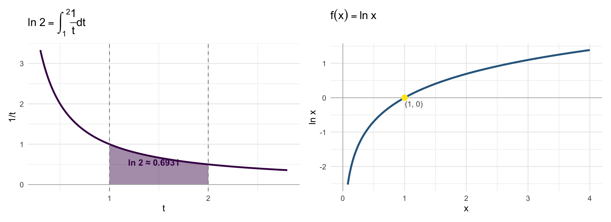

library(ggplot2)
library(patchwork)
base_t <- theme_minimal(base_size = 12)
# ln 2: área em [1,2]
t_fill1 <- seq(1, 2, length.out = 300)
t_all1 <- seq(0.3, 2.8, length.out = 400)
df_fill1 <- data.frame(x = t_fill1, y = 1/t_fill1)
df_line1 <- data.frame(x = t_all1, y = 1/t_all1)
p1 <- ggplot() +
geom_area(data = df_fill1, aes(x, y), fill = "#440154", alpha = 0.45) +
geom_line(data = df_line1, aes(x, y), color = "#440154", linewidth = 1.1) +
geom_hline(yintercept = 0, color = "gray70", linewidth = 0.4) +
geom_vline(xintercept = c(1, 2), linetype = "dashed", color = "gray60") +
annotate("text", x = 1.45, y = 0.55,
label = sprintf("ln 2 ≈ %.4f", log(2)), size = 4,
color = "#440154", fontface = "bold") +
labs(title = expression(ln~2 == integral(frac(1,t)*dt, 1, 2)),
x = "t", y = "1/t") + base_t
# gráfico de ln x
x_ln <- seq(0.08, 4, length.out = 400)
df_ln <- data.frame(x = x_ln, y = log(x_ln))
p2 <- ggplot(df_ln, aes(x, y)) +
geom_line(color = "#31688e", linewidth = 1.2) +
geom_hline(yintercept = 0, color = "gray70", linewidth = 0.4) +
geom_vline(xintercept = 0, color = "gray70", linewidth = 0.4) +
geom_point(aes(x = 1, y = 0), color = "#FDE725", size = 3) +
annotate("text", x = 1.15, y = -0.18, label = "(1, 0)", size = 3.5, color = "gray30") +
labs(title = expression(f(x) == ln~x),
x = "x", y = "ln x") + base_t
p1 + p2